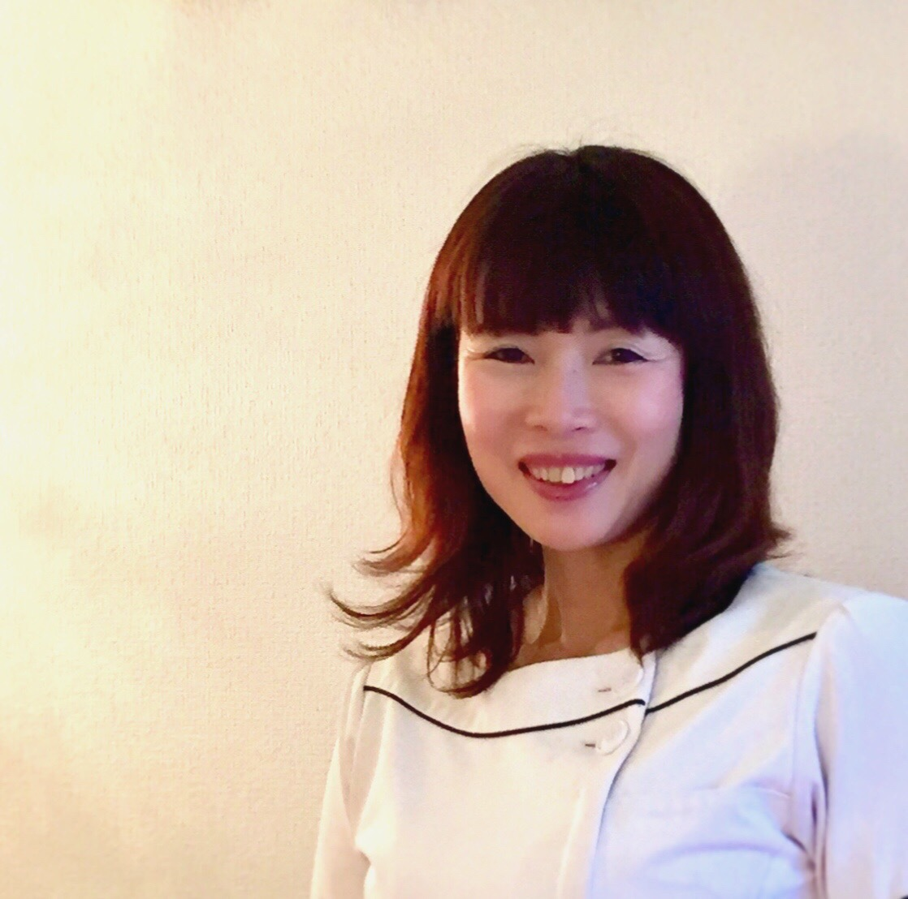
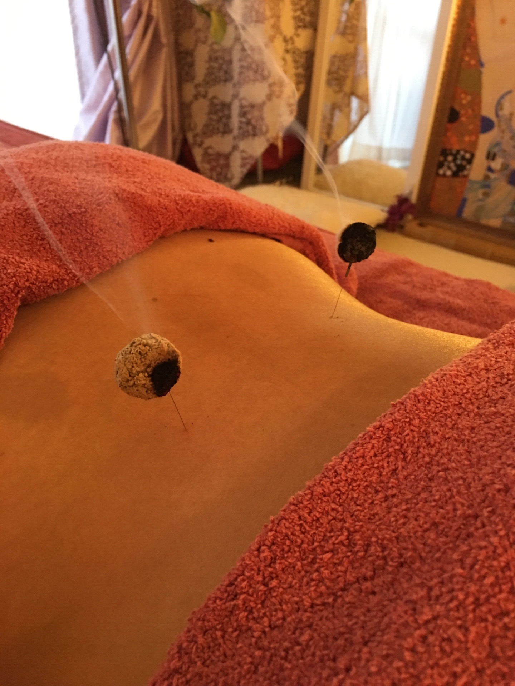
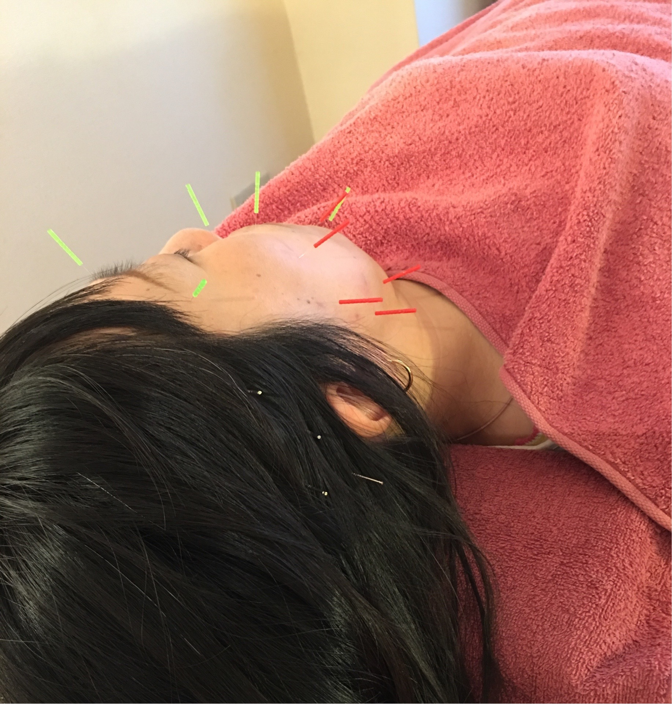
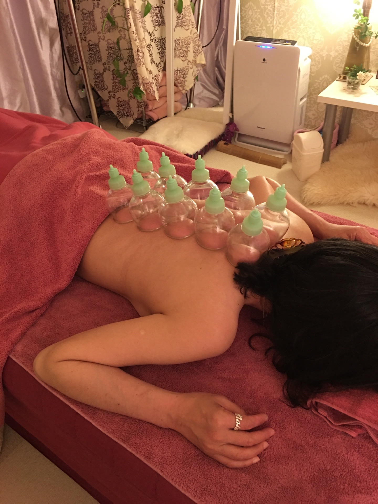
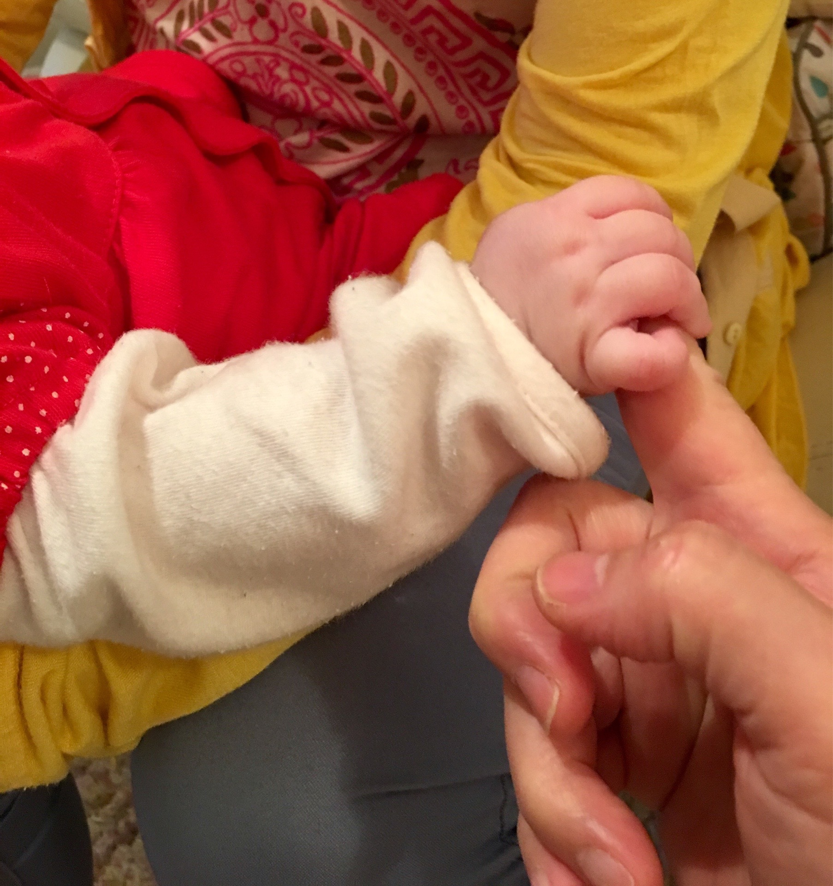
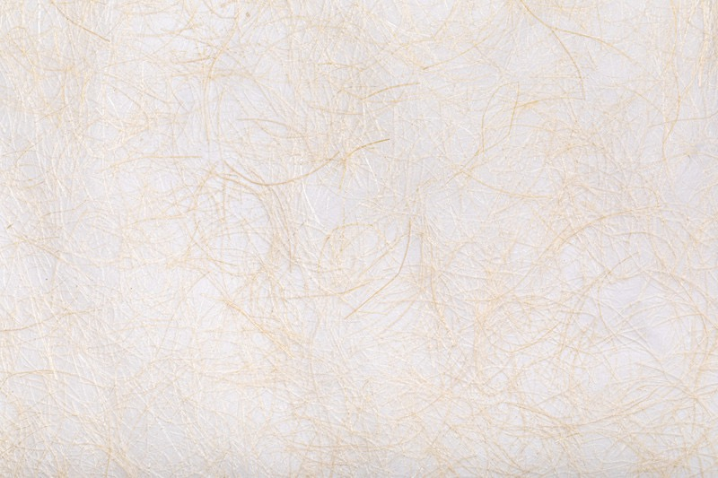

<!DOCTYPE html>
<html>
  <head>
    <meta charset="utf-8">
    <title>るぴにあ鍼灸処</title>
    <link rel="stylesheet" href="https://use.fontawesome.com/releases/v5.6.3/css/all.css">
    <link rel="stylesheet" href="stylesheet.css">
    <meta name="viewport" content="width=device-width, initial-scale=1.0">
    <link rel="stylesheet" href="responsive.css">
      <script src="https://ajax.googleapis.com/ajax/libs/jquery/2.1.4/jquery.min.js"></script>
<body>
  <header>
    <div class="container">
      <div class="header-left">
        <p>/ るぴにあ鍼灸処 /</p>
      </div>
      <div class="header-contents">
        <ul>
          <a href="#a1" class="header-txt">top</a>
          <a href="#a2" class="header-txt">philosophy</a>
          <a href="#a3" class="header-txt">service</a>
          <a href="#a4" class="header-txt">price</a>
          <a href="#a5" class="header-txt">contact</a>
        </ul>
      </div>
      <div class="navToggle">
        <span></span><span></span><span></span><span></span>
      </div>
      <nav class="globalMenuSp">
        <ul>
          <li><a href="#a1">top</a></li>
          <li><a href="#a2">philosophy</a></li>
          <li><a href="#a3">service</a></li>
          <li><a href="#a4">price</a></li>
          <li><a href="#a5">contact</a></li>
        </ul>
      </nav>
    </div>
  </header>
  <div class="top-wrapper" id="a1"></div>
  <div class="philosophy-wrapper" id="a2">
    <div class="container">
      <div class="heading">
        <h1>PHILOSOPHY</h1>
      </div>
      <div class="philosophy">
        <h2>女性鍼灸師による女性のための鍼とお灸</h2>
        <p>仕事を持つ女性が多くなり、毎日家事に仕事に忙しく、ストレスを溜めやすい時代。
         年齢によるホルモンバランスの影響も受けやすいので、何かと不調を感じている方が多いようです。
         そして、最近では妊活している方がとても増えています。
         ストレスは万病の元、身体を冷やす元と言われています。
         身体が冷えていると身体の機能がうまく働きません。生殖器も冷えるとうまく働かないのです。
       </p>
       <p>鍼灸は鍼とお灸を使って全身の血流をよくし、自己治癒力を高める治療法です。
         肩こりの治療のはずが内臓の調子まで良くなって、更にお顔も生き生きとした肌になったりします。
         血流がアップすることによって、細胞の代謝が上がるのです。
         代謝が良くなれば体温も上がり、外からの菌やウイルスの侵入も対処出来るようになるので、病気になりにくい身体になるのです。
         内臓もきちんと働くようになれば、生殖器官も本来の働きを取り戻せるのです。
       </p>
       <p>鍼は痛いのでは？と思う方もいると思いますが、使用する鍼は髪の毛ほどの細さ。
         痛みはほとんどありません。
         お灸も火傷痕が残るようなものではなく、ポカポカと幸せな気分になるようなものです。
         鍼灸でお疲れになった身体を労ってあげませんか？
       </p>
       <p>るぴにあ鍼灸処は女性専用です。
         サロンのような個室のお部屋なので、話を他の人に聞かれることもなく、ゆったりと施術を受けて頂けます。
         施術中は寝るもよし、話してもよし、溜まっていた疲れを流していって下さい。
         『いま』を頑張っている女性を鍼とお灸で応援します！
       </p>
     </div>
     <div class="treatment">
       <h2>不妊治療について</h2>
       <p>るぴにあ鍼灸処では妊活を頑張っている方を応援しています。
         不妊治療を長くしていると女性の身体やココロに過大なストレスが加わってきます。
​         通院によるストレス、ホルモン剤投与や診療による身体へのストレス夫婦間の考え方のズレ…など。
​         身体はストレスを感じるとストレスホルモンが出て血管を収縮させ血流を悪くします。
​         ただ鍼灸をするだけでなく、お話ししたりうつらうつら眠ったり…
        リラックスしてココロも解放させることで鍼灸の効果が何倍にもなると思っています。
        実際にご懐妊された方々は鍼灸治療だけでなく、
​        話を聞いてもらえたから心が軽くなって前向きになれた、と言ってもらえています。
        </p>
        <p>不妊に効くツボに鍼をしてください！
        と来られる方もいますが、まずは全身の状態を整えることで​
        効くツボも出てくるものと思います。
        なので全体のバランスを整えてから女性に良いとされるツボに施術していきます。
        骨盤調整のストレッチをすることもあります。
        食事やストレッチ、ウォーキングのやり方、自宅でのお灸の指導もしています。
        何事も良いことの積み重ねです。
        </p>
        <p><span>一緒に頑張っていきましょう！</span></p>
      </div>
      <div class="introduction">
        <h2>introduction</h2>
        <div class="introduction-wrapper">
          
          <div class="introduction-txt">
            <p>３人の息子をもつアラフィフです。自分自身の健康問題もあり鍼灸師になりました。色々経験したからこそ、鍼灸で人に寄り添えたらと思っています。</p>
            <ul>
              <li>関東鍼灸専門学校</li>
              <li>介護予防運動指導員</li>
              <li>アロマテラピー1級</li>
              <li>心理カウンセラー</li>
              <li>ボディセラピスト</li>
            </ul>
          </div>
        </div>
      </div>
    </div>
  </div>
  <div class="main-wrapper" id="a3">
      <div class="container">
        <div class="heading">
          <h1>SERVICE</h1>
        </div>

        <div class="services">
          <div class="service">
            <div class="service-icon">
              
              <p>全身治療</p>
            </div>
            <p class="txt-contents">脈と舌とお腹を診てから背中を中心に施術していきます。身体の状態は人それぞれですので、その人に合った施術をしていきます。首肩こり、腰痛、膀胱炎、生理痛、更年期症状、難聴、自律神経、うつ症状、つわり逆子などのマタニティ関連、身体の不調など身体の様々なお悩み。時間は60分です。</p>
          </div>
          <div class="service">
            <div class="service-icon">
              
              <p>美容ばり</p>
            </div>
            <p class="txt-contents">お顔の悩みに従って鍼をお顔にしていきます。頭、首から背中もほぐすことで効果を上げていきます。60分コースはお顔と首周り、90分コースは背中もしっかりケアします。お顔は身体の状態が出るところ。おすすめは90分コースです。両方ともヘッドマッサージがつきます。</p>
            <p class="txt-contents">※お顔は皮膚が繊細な場所なので、稀に青アザと言われる内出血や出血をすることがあります。出血はすぐに止まりますが、内出血は小さなもので消失するのに7日ほどかかる場合もあります。痕に残ることはありませんがイベント等控えている場合は念のため避けたほうがいいかと思います。</p>
          </div>
          <div class="service">
            <div class="service-icon">
              
              <p>カッピング</p>
            </div>
            <p class="txt-contents">身体に吸い玉と言われるカップをあてて吸引することで身体に溜まった瘀血の処理をします。痛みはなく気持ち良い施術です。身体がポカポカします。鍼やアロママッサージに加えることで効果を上げます。</p>
            <p class="txt-contents">※カッピングのみでも大丈夫です。カップの痕がつくことがありますが、2〜7日程度で消えます。痕が残ることはありません。</p>
          </div>
          <div class="service">
            <div class="service-icon">
              
              <p>妊活治療</p>
            </div>
            <p class="txt-contents">全身治療に加えて生殖器にいいツボを取り入れた治療です。骨盤調整のストレッチを行うこともあります。鍼灸で赤ちゃんができるの？と思うかもしれませんが、身体の冷えを取り血流を上げることで生殖器の機能がうまく働くようになります。これまで何人も『るぴにあ』から鍼ベイビーが誕生しました。ベイビー達は皆とても元気にスクスク育っています。滅多なことでは病気にかからないし、肌も綺麗、と先輩ママ達が口を揃えて言ってくれます。ママ本人も産後がラクだったと聞きます。週に1度か10日に1度は通っていただきます。</p>
          </div>
          <div class="service">
            <div class="service-icon">
              
              <p>その他</p>
            </div>
              <p class="txt-contents"><span>耳つぼ鍼</span>：耳のツボにシール式の鍼を貼ります。片耳ずつ4日毎の張り替えが必要になります。有資格者だからできる、しっかりとした鍼を使います。</p>
              <p class="txt-contents"><span>アロマオイルマッサージ</span>：アロマオイルを使い、ツボを刺激しながらマッサージをします。リラックス重視の方におすすめです。</p>
          </div>
        </div>
      </div>
    </div>
    <div class="price-wrapper" id="a4">
      <div class="container">
        <div class="heading">
          <h1>PRICE</h1>
        </div>
        <div class="prices">
          <div class="price-wholeBody price">
            <h3>全身治療</h3>
            <p>60分：5000円</p>
            <p>5回分回数券：21000円</p>
          </div>
          <div class="price-beauty price">
            <h3>美容鍼灸</h3>
            <p>60分：6500円</p>
            <p>5回分回数券：27000円</p>
          </div>
          <div class="price-beauty-wholeBody price">
            <h3>美容＋全身治療</h3>
            <p>90分：8500円</p>
            <p>5回分回数券：35000円</p>
          </div>
          <div class="price-ear price">
            <h3>耳つぼ鍼</h3>
            <p>初回のみ：2000円</p>
            <p>2回目以降：1000円</p>
          </div>
          <div class="price-cupping price">
            <h3>カッピング</h3>
            <p>60分：5000円</p>
            <p>5回分回数券：21000円</p>
          </div>
          <div class="price-massage price">
            <h3>アロマオイルマッサージ</h3>
            <p>60分：7000円/90分：9500円</p>
            <p>5回分回数券,60分：28000円/90分：35000円</p>
          </div>
          <div class="clear"></div>
        </div>
      </div>
    </div>
    <div class="contact-wrapper" id="a5">
      <div class="container">
        <div class="heading">
          <h1>CONTACT</h1>
        </div>
        <div class="contact-message">
          <p class="contact-txt">ご予約は基本お電話にて受け付けております。下記記載の電話番号にお掛けください。</p>
          <p class="contact-txt">また、ご不明な点や相談などございましたら遠慮なくご連絡ください。</p>
          <p class="contact-txt">メールでのご連絡の場合、返信が遅くなる場合がありますのでご了承ください。</p>
          <p class="contact-txt">​皆様からのご連絡を心よりお待ちしております。</p>
        </div>
        <div class="contact">
          <a href="070-5029-9254" class="btn-contact">070-5029-9254</a>
          <a href="malito:kuririkurin4_4&#64;i.softbank.jp" class="btn-contact">メールはこちらへ</a>
        </div>
        <div class="lugar">
          <iframe src="https://www.google.com/maps/embed?pb=!1m18!1m12!1m3!1d3240.426831963125!2d140.02170161498933!3d35.69111268019199!2m3!1f0!2f0!3f0!3m2!1i1024!2i768!4f13.1!3m3!1m2!1s0x602280242076a3b9%3A0x94588bb5f6e4697e!2z5pel5pys44CB44CSMjc1LTAwMTYg5Y2D6JGJ55yM57-S5b-X6YeO5biC5rSl55Sw5rK877yR5LiB55uu77yR77yT4oiS77yS77yU!5e0!3m2!1sja!2ses!4v1574261904216!5m2!1sja!2ses" width="100%" height="300" frameborder="0" style="border:0;" allowfullscreen=""></iframe>
          <p>住所：千葉県習志野市津田沼1-13-24,カメリヤマンション108</p>
          <p>JR津田沼駅北口より徒歩4分</p>
          <p>新京成線津田沼駅より徒歩1分</p>
          <p>営業時間：10:00~20:00　※受付時間20時となります。
                              ※施術中はお電話に出られない場合があります。</p>
          <p>定休日：木曜日</p>
          <p>クレジットカード：利用不可</p>
        </div>
      </div>
    </div>
    <footer>
      <div class="footer-logo">
        <p>/ るぴにあ鍼灸処 /</p>
      </div>
    </footer>
     <script src="script.js"></script>
</body>
</html>
